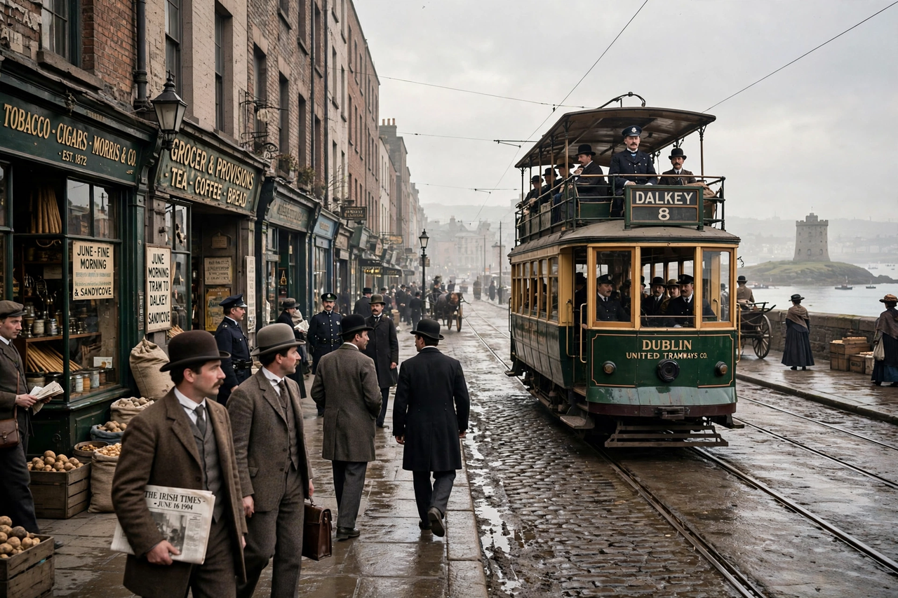

Ulysses (novel)

A Dublin street on 16 June 1904: trams, bowler hats, the tower of a church, and a man buying kidney for breakfastUlysses is a modernist novel by the Irish writer James Joyce. Partially serialised in the American journal The Little Review from March 1918 to December 1920, it was first published in full in Paris by Sylvia Beach's Shakespeare and Company on 2 February 1922, Joyce's 40th birthday. In it, Joyce establishes parallels between the characters and events of Homer's The Odyssey and his own modern Dublin.
The novel chronicles an ordinary day — 16 June 1904, the date of Joyce's first outing with Nora Barnacle — in the life of advertising canvasser Leopold Bloom, alongside student Stephen Dedalus and Bloom's wife Molly, whose unpunctuated closing soliloquy ends the book. Each of its 18 episodes uses a different style. Banned for obscenity in the US until 1933 and in the UK until 1936, Ulysses is now routinely ranked the greatest novel of the 20th century.